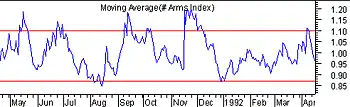
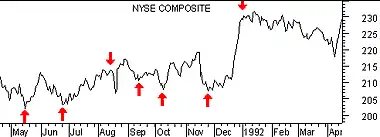

Arms Index
Overview
The Arms Index is a market indicator that shows the relationship between the number of stocks that increase or decrease in price (advancing/declining issues) and the volume associated with stocks that increase or decrease in price (advancing/declining volume). It is calculated by dividing the Advance/Decline Ratio by the Upside/Downside Ratio.
The Arms Index was developed by Richard Arms in 1967. Over the years, the index has been referred to by a number of different names. When Barron's published the first article on the indicator in 1967, they called it the Short-term Trading Index. It has also been known as TRIN (an acronym for TRading INdex), MKDS, and STKS.
Interpretation
The Arms Index is primarily a short-term trading tool. The Index shows whether volume is flowing into advancing or declining stocks. If more volume is associated with advancing stocks than declining stocks, the Arms Index will be less than 1.0; if more volume is associated with declining stocks, the Index will be greater than 1.0.
The Index is usually smoothed with a moving average. I suggest using a 4-day moving average for short-term analysis, a 21-day moving average for intermediate-term, and a 55-day moving average for longer-term analysis.
Normally, the Arms Index is considered bullish when it is below 1.0 and bearish when it is above 1.0. However, the Index seems to work most effectively as an overbought/oversold indicator. When the indicator drops to extremely overbought levels, it is foretelling a selling opportunity. When it rises to extremely oversold levels, a buying opportunity is approaching.
What constitutes an "extremely" overbought or oversold level depends on the length of the moving average used to smooth the indicator and on market conditions. Table 5 shows typical overbought and oversold levels.
| Table 5 | ||
| Moving Average | Overbought | Oversold |
| 4-day | 0.70 | 1.25 |
| 21-day | 0.85 | 1.10 |
| 55-day | 0.90 | 1.05 |
Example
The following chart contains a 21-day moving average of the Arms Index and the New York Stock Exchange Index.  Horizontal lines are drawn at the oversold level of 1.08 and at the overbought level of 0.85. I drew "buy" arrows when the Arms Index peaked above 1.08 and "sell" arrows when the Index bottomed below 0.85. In most of the cases the arrows occur at, or one day before, significant changes in price.
Calculation
The Arms Index is calculated by first dividing the number of stocks that advanced in price by the number of stocks that declined in price to determine the Advance/Decline Ratio. Next, the volume of advancing stocks is divided by the volume of declining stocks to determine the Upside/Downside Ratio. Finally, the Advance/Decline Ratio is divided by the Upside/Downside Ratio.